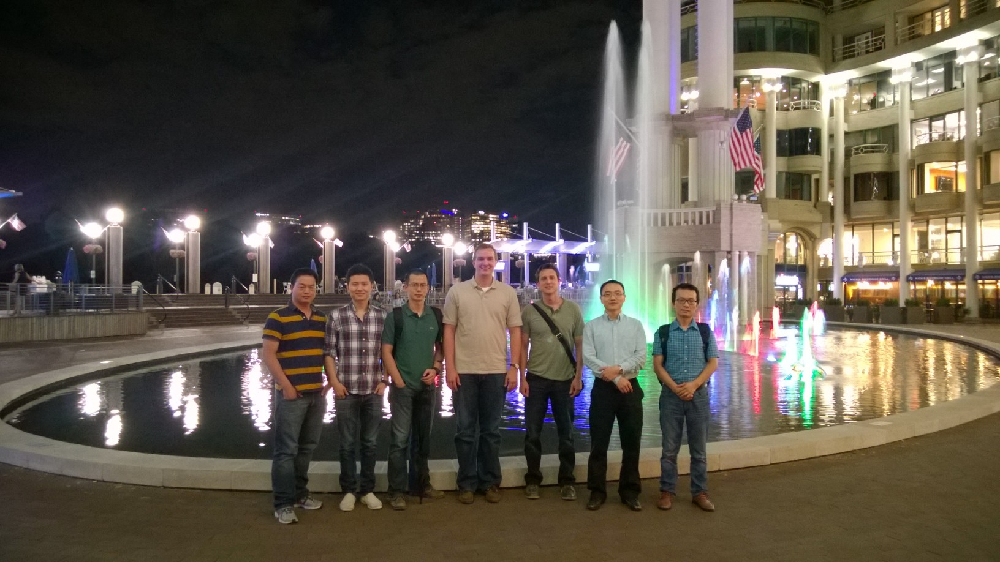

|
|

Christopher Cox
ccox at gwmail dot gwu dot edu
Department of Mechanical and Aerospace Engineering
The George Washington University
Science and Engineering Hall
800 22nd Street, 3rd Floor, NW
Washington, DC 20052
|
Current Research
High-order computational fluid dynamics for secondary
flow structures in curved arteries under pulsatile
flow conditions.
- flux reconstruction and spectral difference methods
- moving and deforming, unstructured grids
- implicit time stepping
- p-multigrid
- high-performance parallel computing
Education
Academic Positions
Teaching Assistant - The George Washington University
- APSC 6213 (graduate), Analytical Methods in Engineering III - Partial Differential Equations, Fall 2014
- APSC 6212 (graduate), Analytical Methods in Engineering II - Linear Algebra, Spring 2014
- MAE 3126 (undergraduate), Fluid Mechanics I, Fall 2013 and Fall 2016
Awards & Honors
- The George Washington University Presidential Merit Fellowship, 2011-2017
- The George Washington University Douglas L. Jones Endowed Scholarship, 2016-2017
- The George Washington University Graduate Research Theoretical Award, 1st Place, 2015
- ASME Pressure Vessel and Piping Division's Outstanding Technical Paper for Fluid-Structure Interaction, 2013
- Stanford University Graduate Federal Research Assistantship Award, 2003-2005
- Rensselaer Polytechnic Institute Donald V. Edwards Endowed Engineering Scholarship, 1998-2002
- Rensselaer Polytechnic Institute Dean's Scholarship, 1998-2002
- Sigma Gamma Tau National Aerospace Engineering Honor Society, 2000
- Pi Tau Sigma International Mechanical Engineering Honor Society, 2000
Industry Positions
- Quantitative Research Analyst, McGowan Investors, 2008-2010
- Quantitative Research Analyst, Volare Capital Management, 2006-2008
- Design & Project Engineer, Pratt & Whitney - United Technologies Corporation, 2001
Professional Activities
- Peer Reviewer, Journal of Computational Physics
- Peer Reviewer, Journal of Computers & Fluids
- Peer Reviewer, AIAA Aerospace Sience Meeting
- Peer Reviewer, AIAA Aviation
- Member, American Institute of Aeronautics and Astronautics
- Member, American Physical Society
- Session Chair, ASME Pressure Vessels and Piping Conference, 2012
- Judge, The George Washington University SEAS R&D Showcase, 2018

|
|